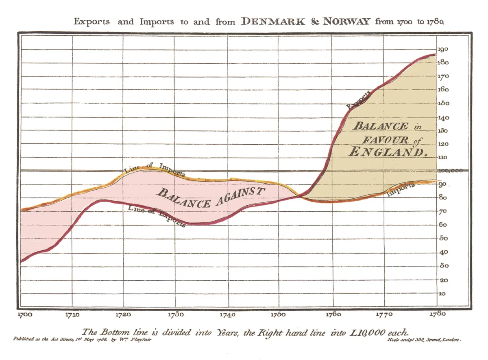
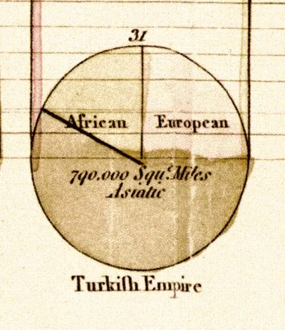

Il primo grafico a torta
L'Impero turco nel Statistical Breviary (1801), uno dei primi grafici a torta. Pubblico dominio, Wikimedia Commons.
William Playfair
Scozia, 1759 – Londra, 1823 · ingegnere ed economista politico
Nato vicino a Dundee, lavorò da giovane come disegnatore per James Watt nell'officina di Boulton & Watt a Birmingham, dove le macchine a vapore si progettavano a forza di disegni tecnici. Passò poi all'economia politica, al giornalismo e a una lunga serie di imprese, non sempre fortunate.
Nel 1786 pubblicò il Commercial and Political Atlas: 44 tavole in cui importazioni, esportazioni e debito pubblico inglese diventavano linee, aree e barre. Era la prima volta che dati economici venivano mostrati così. Nel 1801, con lo Statistical Breviary, aggiunse i primi grafici a torta e a cerchi. Sosteneva che un grafico fa capire in un colpo d'occhio ciò che una tabella nasconde: è l'idea su cui si regge questo sito.
- 1759nasce a Liff, presso Dundee
- 1777disegnatore per James Watt a Birmingham
- 1786Commercial and Political Atlas: grafici a linee, ad area e a barre
- 1801Statistical Breviary: i primi grafici a torta
- 1823muore a Londra